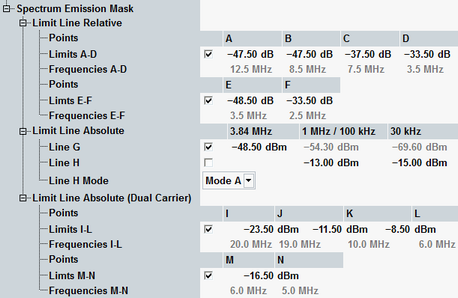
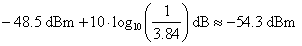
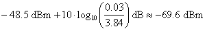

The spectrum emission mask complements the ACLR limits. The limits are defined in the configuration dialog.

The mask is defined as described in the following tables. The corresponding R&S CMW settings (points and lines) are indicated.
These requirements are defined in 3GPP TS 34.121, sections 5.9 "Spectrum Emission Mask", 5.9A and 5.9B.
The first table lists a relative requirement (dB relative to carrier) and an absolute requirement (dBm). The higher of the two power limits applies.
Also the requirements in the subsequent tables have to be fulfilled, depending on the operating band. When you select an operating band with additional requirements, the line H mode is set automatically (a manual override is possible). The mode determines the frequency offset range to be used for the limit check (first column of the tables) and the measurement bandwidth (last column). The limit value settings (second column) are not influenced by the line H mode and have to be set manually.
Δf 1) | Relative requirement | Absolute requirement 2) | Measurement bandwidth |
|---|---|---|---|
2.5 MHz to 3.5 MHz | –33.5 dBc – 15*(Δf/MHz – 2.5) dBc (--> point E, F) | -69.6 dBm (--> line G) | 30 kHz |
3.5 MHz to 7.5 MHz | –33.5 dBc – 1*(Δf/MHz – 3.5) dBc (--> point C, D) | -54.3 dBm (--> line G) | 1 MHz |
7.5 MHz to 8.5 MHz | –37.5 dBc – 10*(Δf/MHz – 7.5) dBc (--> point B, C) | -54.3 dBm (--> line G) | 1 MHz |
8.5 MHz to 12.5 MHz | –47.5 dBc (--> point A, B) | -54.3 dBm (--> line G) | 1 MHz |
Δf 1) | Additional requirement | Measurement bandwidth |
|---|---|---|
Requirements for bands II, IV, X, XXV: | ||
2.5 MHz to 3.5 MHz | –15 dBm (--> line H, mode A) | 30 kHz |
3.5 MHz to 12.5 MHz | –13 dBm (--> line H, mode A) | 1 MHz |
Requirements for bands V, XXVI: | ||
2.5 MHz to 3.5 MHz | –15 dBm (--> line H, mode B) | 30 kHz |
3.5 MHz to 12.5 MHz | –13 dBm (--> line H, mode B) | 100 kHz |
Requirements for bands XII, XIII, XIV: | ||
2.5 MHz to 2.6 MHz | –13 dBm (--> line H, mode C) | 30 kHz |
2.6 MHz to 12.45 MHz | –13 dBm (--> line H, mode C) | 100 kHz |
Note 1) Δf is the separation between the carrier center frequency and the center of the measurement bandwidth. Each linear limit line section is defined by a pair of points (A, B), (B, C), ..., (E, F),assuming a linear power/frequency dependence or by a horizontal line. The first and last measurement positions depend on the measurement bandwidth and on the operating band. They are implemented as defined in 3GPP TS 34.121, section 5.9.
Note 2) The absolute limit equals –48.5 dBm referenced to a 3.84 MHz filter. The corresponding limits for a 1 MHz filter and a 30 kHz filter can be calculated from this limit as follows:


All measured spectrum emission values are relative to the UE output power measured in a 3.84 MHz bandwidth (reference power). These dB values are used to check relative limits. To check absolute limits, the relative spectrum emission values are converted into absolute values (dBm). For current values, the conversion is based on the current reference power. For average and maximum values, it is based on the average reference power.
The complete spectrum emission mask for band II is shown in the figure below.

The spectrum emission mask for dual carrier in uplink differs as stated in the following table.
Δf 3) | Additional requirement | Measurement bandwidth |
|---|---|---|
± (5 MHz to 6 MHz) | –16.5 dBm (--> point M, N) | 30 kHz |
± (6 MHz to 10 MHz) | –8.5 dBm (--> point K, L) | 1 MHz |
± (10 MHz to 19 MHz) | –11.5 dBm (--> point J, K) | 1 MHz |
± (19 MHz to 20 MHz) | –23.5 dBm (--> point I, J) | 1 MHz |
Additional requirements for DC-HSUPA in bands II, IV, V, X, XXV, XXVI: | ||
± (5 MHz to 6 MHz) | –18 dBm (--> point M, N) | 30 kHz |
± (6 MHz to 19 MHz) | –13 dBm (--> point J, L) | 1 MHz |
± (19 MHz to 20 MHz) | –125 dBm (--> point I, J) | 1 MHz |
Note 3) Δf is the separation between the center frequency of both carriers and the center of the measurement bandwidth. Each linear limit line section is defined by a pair of points (I, J), (J, K), (K, L) and (M, N), assuming a linear power/frequency dependence. They are implemented as defined in 3GPP TS 34.121, section 5.9D.